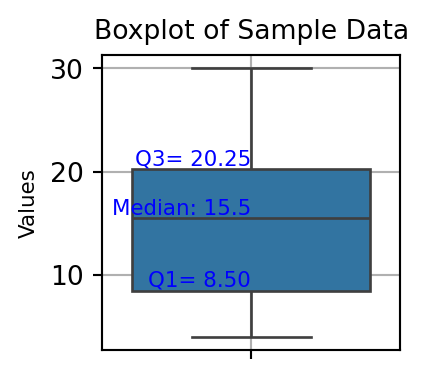
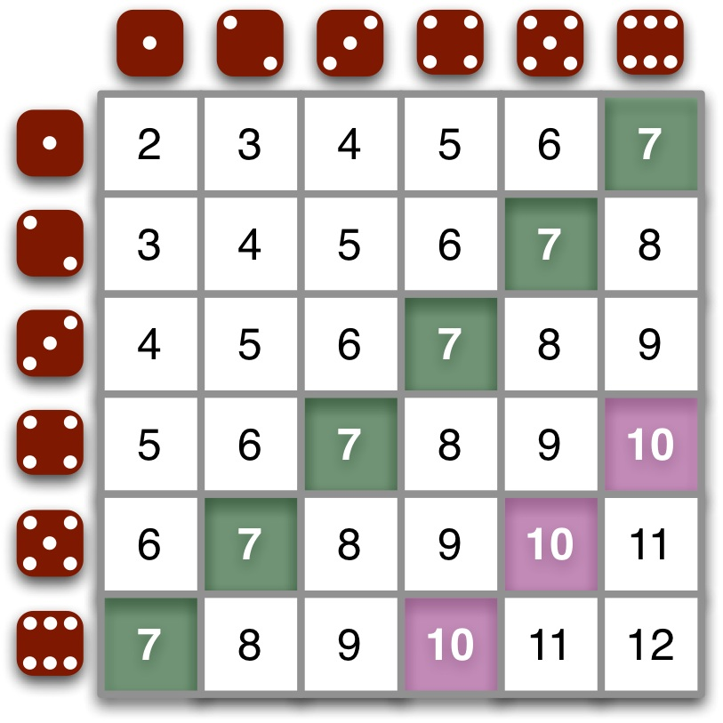
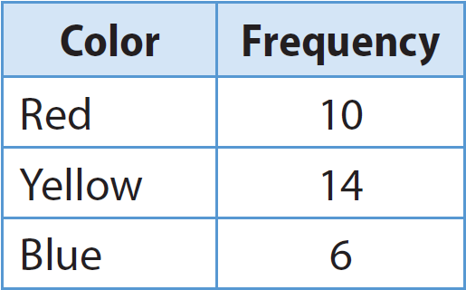
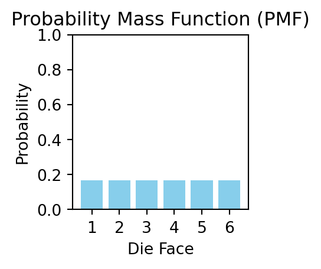
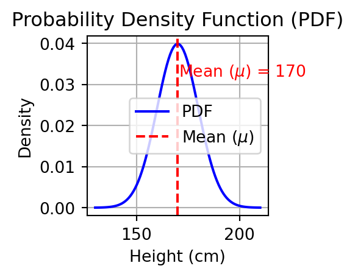
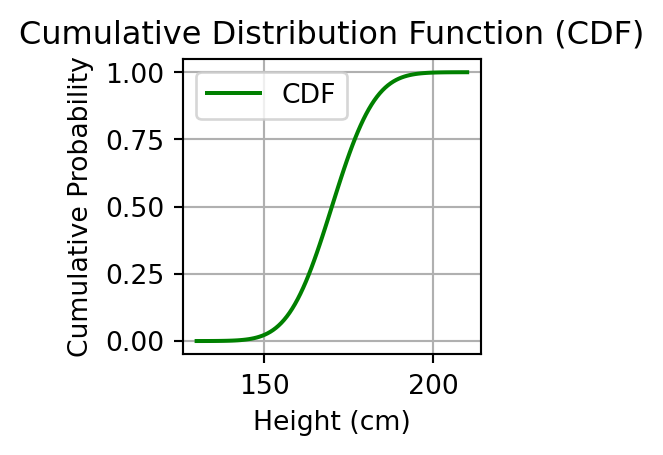
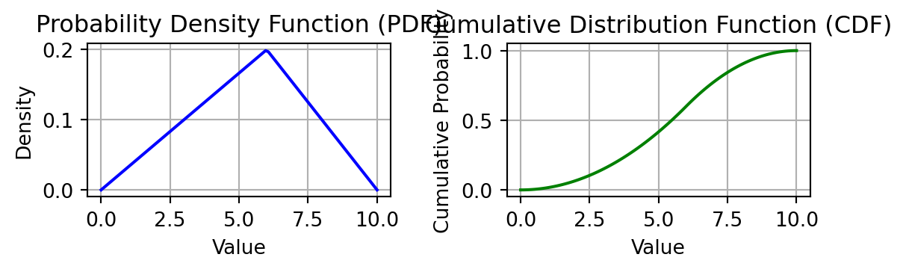
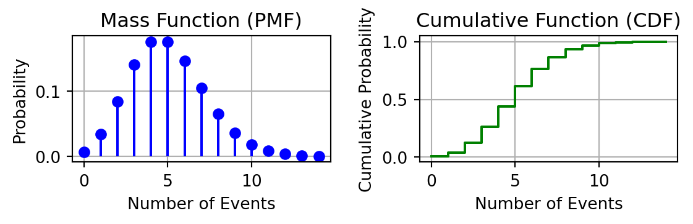
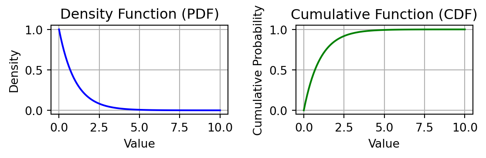

Statistics refresher
Víctor Mario Noble Ramos, MSc.
2024-09-10
Goal
To remember key concepts in statistics that enhance and alllow to understand how machine learning methods work.
Contents
- Basic concepts in probability
- Descriptive statistics
- Common probability distributions and random variables
- Statistical inference and hypotheses testing
1. Basic concepts in probability
Probability definition and importance
Probability is a numerical measure of the likelihood that an event will occur. It is expressed as a number between 0 and 1, where 0 indicates impossibility and 1 indicates certainty.
Also it can be seen as the frequency that event occurs in a sample or in a population.
This can be expressed mathematically as:
\[P(A) = \frac{(\text{Number of favorable outcomes})} {(\text{Total number of possible outcomes})}\]
Probability definition and importance


Events and sample spaces
Sample space
Set of all possible outcomes or results of that experiment.
Example:
Consider: \(S = \{H,T\}\) the sample space of the experiment: ‘tossing a coin’ (Experiment 1).
Tossing two coins is another experiment (Experiment 2). In this case, the sample space will be denoted by: \(R=\{HH,HT,TH,TT\}\).
Note the sample space \(R\) is the cartesian product of \(S\) by itself: \(R = S\times R\).
Events and sample spaces
Event
Subset of a sample space, this is a set of possible outcomes that share certain characteristic in a determined experiment.
Example:
Consider the experiments above and calculate the following:
Probability of getting at least one tail in experiment 1: \(R=\{HH,HT,TH,TT\}\).
Dependent and independent events
Independent Events
Definition: Two events are independent if the occurrence of one does not affect the probability of the other. \[P(A \cap B) = P(A) \times P(B)\]
Example: Rolling a die and flipping a coin. The outcome of the die roll does not affect the outcome of the coin flip.
Dependent Events
Definition: Two events are dependent if the occurrence of one affects the probability of the other. \[P(A \cap B) = P(A) \times P(B | A)\]
Example: Drawing cards without replacement. The probability of drawing a heart changes if you have already drawn one heart.
Example Calculations
Independent Events Example
- Experiment: Rolling a fair die and flipping a fair coin.
- Probability of rolling a 4, \(P(A) = \frac{1}{6}\)
- Probability of getting heads, \(P(B) = \frac{1}{2}\)
- Joint probability of rolling a 4 and getting heads: \[ P(A \cap B) = P(A) \times P(B) = \frac{1}{6} \times \frac{1}{2} = \frac{1}{12} \]
Dependent Events Example
- Experiment: Drawing two cards from a deck without replacement.
- Probability of drawing a heart on the first draw, \(P(A) = \frac{13}{52} = \frac{1}{4}\)
- Probability of drawing a heart on the second draw given the first card was a heart, \(P(B | A) = \frac{12}{51}\)
- Joint probability of both draws being hearts: \[P(A \cap B) = P(A) \times P(B | A) = \frac{1}{4} \times \frac{12}{51} = \frac{12}{204} = \frac{1}{17}\]
Complementary and compound events
Complementary events
Complementary events are two mutually exclusive events whose probabilities sum to 1, meaning one or the other must occur in any given trial.
- Example: When flipping a fair coin, “heads”(H) and “tails”(T) are complementary events. The probability of heads is 0.5, and the probability of tails is also 0.5. These probabilities sum to 1, and in any single flip, the outcome must be either heads or tails.
Formally: \[H \equiv \bar{T} \text{ and } T \equiv \bar{H}\] \[P(H) = 1 - P(\bar{H}) \text{ and } P(T) = 1 - P(\bar{T})\]
Complementary and compound events
Compound events
Are events that are formed by combining two or more simpler events using logical operations such as “and” (intersection) or “or” (union). There are two main types of composed events:
Intersection (AND): The event occurs only if all component events occur simultaneously.
- Example: Drawing a red (R) king (K) from a standard deck of cards. This is composed of two events: drawing a red card AND drawing a king.
The probability of this compound event is: \[P(K \cap R) = P(K) \cdot P(R) \text{, as they are independent}\] \[P(K \cap R) = \frac{4}{52} \cdot \frac{26}{52} = \frac{104}{2704} = 0.0385 \]
Complementary and compound events
Compound events
Are events that are formed by combining two or more simpler events using logical operations such as “and” (intersection) or “or” (union). There are two main types of composed events:
Union (OR): The event occurs if at least one of the component events occurs.
- Example: Rolling an even number or a number greater than 4 on a six-sided die. This is composed of the union of two events: \(A:=\) rolling an even number (2, 4, or 6) OR \(B:=\) rolling a number greater than 4 (5 or 6). \[P(A \cup B) = P(A) + P(B) - P(A \cap B)\text{, we must not account the commonality twice.}\] \[P(A \cup B) = \frac{3}{6} + \frac{2}{6} - \frac{1}{6} = \frac{5}{6} = 0.8333\]
Conditional probability
What is Conditional Probability?
Definition: Conditional probability is the probability of an event occurring given that another event has already occurred.
Notation and calculation: \(P(B | A)\) which represents the probability of event B occurring given that event A has occurred. \[ P(B | A) = \frac{P(A \cap B)}{P(A)} \]
From the conditional probability notion, we can calculate the probability of both events A and B, by isolating the formula, from:
\[ P(A \cap B) = P(A) \cdot P(B | A) \]
Conditional probability
Example
- Experiment: Draw a card of a deck of 52 cards.
Event A: A heart is drawn.
Event B: A queen is drawn.
If we want to find the probability of drawing a queen given that a heart has been drawn: \[ P(\text{Queen} | \text{Heart}) = \frac{P(\text{Heart} \cap \text{Queen})}{P(\text{Heart})} \]
There is 1 queen of hearts out of 13 hearts, so:
\(P(\text{Heart} \cap \text{Queen}) = \frac{1}{52}\), and \(P(\text{Heart}) = \frac{13}{52} = \frac{1}{4}\) \[ P(\text{Queen} | \text{Heart}) = \frac{\frac{1}{52}}{\frac{1}{4}} = \frac{1}{13} \]
Conditional probability
Exercise:
- Experiment: There is bag with 3 red and 2 blue marbles. Two marbles are drawn without replacement.
- Event A: Drawing a red marble first.
- Event B: Drawing a blue marble second.
- Find \(P(B | A)\): \[ P(B | A) = \frac{P(A \cap B)}{P(A)} \]
- \(P(A) = \frac{3}{5}\)
- After drawing one red marble, there are 2 blue and 2 red marbles left, so: \[ P(A \cap B) = \frac{3}{5} \times \frac{2}{4} = \frac{3}{10} \] \[ P(B | A) = \frac{\frac{3}{10}}{\frac{3}{5}} = \frac{2}{4} = \frac{1}{2} \]
Bayes theorem
What is Bayes’ Theorem?
- Definition: Bayes’ Theorem provides a way to update the probability of an event based on new evidence. It gives a mathematical rule for inverting conditional probabilities, allowing us to find the probability of a cause given its effect.
- Formula: \[
P(A | B) = \frac{P(B | A) \cdot P(A)}{P(B)}
\] where:
- \(P(A | B)\) is the posterior probability: the probability of event A given that B has occurred. (What we want to know)
- \(P(B | A)\) is the likelihood: the probability of event B given that A has occurred.
- \(P(A)\) is the prior probability: the initial probability of event A.
- \(P(B)\) is the marginal probability: the total probability of event B.
Bayes theorem (visual proof)

Visual proof of bayes theorem
Example
In an manufacturing plant, two machines are used to assemble electric engines. Machine A produces 40% of the engines, while machine B produces 60%. The percentage of defective engines assembled by machine A is 2%, and by machine B is 3%. If an engine is randomly selected from the total production and turns out to be defective, what is the probability that it was assembled by machine A?
Example solution
- Given data:
- \(P(A) = 0.40\) (Probability that the engine was assembled by machine A).
- \(P(B) = 0.60\) (Probability that the engine was assembled by machine B).
- \(P(D|A) = 0.02\) (probability that the engine is defective given that it was assembled by machine A).
- \(P(D|B) = 0.03\) (probability that the engine is defective given that it was assembled by machine B).
- Calculate \(P(D)\): Total probability of the engine is defective: \[ P(D) = P(D|A) \cdot P(A) + P(D|B) \cdot P(B) \] \[ P(D) = (0.02 \cdot 0.40) + (0.03 \cdot 0.60) = 0.008 + 0.018 = 0.026 \]
- Finally, calculate \(P(A|D)\): \[ P(A|D) = \frac{P(D|A) \cdot P(A)}{P(D)} \] \[ P(A|D) = \frac{0.02 \cdot 0.40}{0.026} = \frac{0.008}{0.026} \approx 0.3076 \]
The probability that the defective engine was assembled by machine A is approximately 30.8%.
Example 2
- Experiment: A person takes a medical test for a rare disease.
- Disease Prevalence: \(P(D) = 0.01\) (1% of the population has the disease)
- Test Accuracy:
- True Positive Rate: \(P(T | D) = 0.95\) (95% chance of testing positive if the disease is present)
- False Positive Rate: \(P(T | \neg D) = 0.05\) (5% chance of testing positive if the disease is not present)
- Find \(P(D | T)\): Probability of having the disease given a positive test result.
Example 2 solution
Applying the Bayes theorem we have:
Given Data:
- \(P(D) = 0.01\)
- \(P(T | D) = 0.95\)
- \(P(T | \neg D) = 0.05\)
Calculate \(P(T)\): Total probability of testing positive \[ P(T) = P(T | D) \cdot P(D) + P(T | \neg D) \cdot P(\neg D) \] \[ P(T) = (0.95 \times 0.01) + (0.05 \times 0.99) = 0.0095 + 0.0495 = 0.059 \]
Calculate \(P(D | T)\): \[ P(D | T) = \frac{P(T | D) \cdot P(D)}{P(T)} \] \[ P(D | T) = \frac{0.95 \times 0.01}{0.059} \approx \frac{0.0095}{0.059} \approx 0.161 \] So, the probability of having the disease given a positive test result is approximately 16.1%.
Exercise (homework)
Suppose the person above, gave positive in a first test of the rare disease. To confirm the diagnostic, a second test with the same characteristics as the first is done in the same laboratory and under the same conditions as the first test. Calculate the probability of the person have the disease given a second positive result.
Suppose the person takes the test for the third time and this time it comes back negative. Again, assume that the test is conducted under the same conditions as before. What is the probability that the person does not have the disease?
2. Descriptive statistics
Measures of central tendency
Comparison of Measures of Central Tendency
| Measure | Advantages | Disadvantages |
|---|---|---|
| Mean | Uses all data | Affected by outliers |
| Median | Not affected by outliers | Does not use all data |
| Mode | Useful for categorical data | May not exist or may be multiple |
Comparative Example:
- Data: 2, 2, 3, 10, 100
- Mean: 23.4
- Median: 3
- Mode: 2
Percentiles and Quartiles
- Percentiles:
- Definition: Percentiles divide the data into 100 equal parts.
- Calculation: The \(k\)-th percentile is the value below which \(k \%\) of the data fall.
- Example: The 25th percentile (P25) is the value below which 25% of the data lie.
- Quartiles:
- Definition: Quartiles divide the data into four equal parts.
- Components:
- Q1 (First Quartile): The 25th percentile, below which 25% of the data fall.
- Q2 (Second Quartile): The 50th percentile, also known as the median.
- Q3 (Third Quartile): The 75th percentile, below which 75% of the data fall.
- Visual Representation:
- Box Plot: Displays quartiles and the IQR, highlighting the spread and central tendency of the data.
Calculation of Percentiles and Quartiles
- Sample Data:
- Data: 30, 7, 21, 18, 4, 10, 16, 8, 25, 15
- Percentiles:
- 25th Percentile (P25): Value below which 25% of the data fall.
- 50th Percentile (P50): Also known as the median.
- 75th Percentile (P75): Value below which 75% of the data fall.
- Quartiles:
- Q1 (First Quartile): The 25th percentile.
- Q2 (Second Quartile): The median (50th percentile).
- Q3 (Third Quartile): The 75th percentile.
Detailed Calculation (linear interpolation method):
Sort Data: 4, 7, 8, 10, 15, 16, 18, 21, 25, 30
Find Quartiles: \[p(k)=1+(n−1)×p\]
- \(Q1\) (quantile 0.25):
Position = \(1+(10−1)×0.25=1+9×0.25=1+2.25=3.25\)
\(Q1=8\text{(the 3rd data point)}+(0.25×(10−8))=8+0.5=8.5\)
- \(Q2\) (Median, quantile 0.5):
Position = \(1+(10−1)×0.5=1+9×0.5=1+4.5=5.5\)
Median = \(Q2=15\text{(the 5th data point)}+(0.5×(16−15))=8+0.5=15.5\)
- \(Q3\) (quantile 0.75):
Position = \(1+(10−1)×0.75=1+9×0.75=1+6.75=7.75\)
\(Q3=18\text{(the 7th data point)}+(0.75×(21−18))=18+2.25=20.25\)
- \(Q1\) (quantile 0.25):
Summary:
Measures of Dispersion
Comparison of Measures of Dispersion
| Measure | Advantages | Disadvantages |
|---|---|---|
| Range | Simple to calculate and understand | Sensitive to outliers |
| Variance | Considers all data points | Units are squared, less intuitive |
| Standard Deviation | Same units as the data | Sensitive to outliers |
| Interquartile Range (IQR) | Not affected by outliers | Ignores data outside the middle 50% |
Comparative Example:
- Data: 1, 2, 2, 3, 4, 10, 100
- Range: 99
- Variance: 1371.43
- Standard Deviation: 37.03
- IQR: 2
Exercise (Homework) 1/2
You are an educational analyst working with a school district to evaluate the performance of students in a recent standardized test. You have collected the test scores from a sample of 50 students. Some students performed exceptionally well, while others struggled significantly, which could indicate the presence of outliers.
The test scores you have collected are as follows: 3, 7, 8, 5, 12, 15, 7, 9, 11, 10, 13, 6, 14, 12, 16, 8, 20, 22, 25, 19, 17, 23, 18, 21, 24, 30, 31, 29, 35, 33, 28, 40, 37, 38, 34, 32, 42, 45, 50, 44, 41, 48, 46, 49, 100, 110, 120, 95, 90, 85
Exercise (Homework) 2/2
- What is the average performance of the students on this test? How does the median compare to the mean?
- Are there any scores that appear more frequently? What might this indicate about the test or the students?
- Identify the outliers in the data set. How do these outliers affect the mean, variance, and standard deviation?
- How do the outliers impact the range and IQR? What does this suggest about the robustness of these measures?
- How much variability is there in the test scores? Are there any signs of high dispersion or concentration?
- What insights can you draw from the IQR and the range regarding the distribution of scores?
- Based on your analysis, what recommendations would you make to improve student performance or address any identified issues?
- Consider the outliers: Do you think they represent isolated incidents or indicative of a larger issue? How should the school district address these outliers?
3. Probability distributions and random variables
Random variable
Definition: A function that assigns a numerical value to each outcome in a sample space.
Denoted with capital letters such as \(X\) or \(Y\).
Types:
- Discrete Random Variable: Takes on countable values (e.g., integers).
- Continuous Random Variable: Takes on an infinite number of possible values within an interval.
Random variable examples:
Discrete random variable: Tossing a Die
- Sample Space: {1, 2, 3, 4, 5, 6}
- Random Variable \(X\): Value showing up on the die.
- Possible Values: 1, 2, 3, 4, 5, 6
Continuous random variable: Height of Individuals
- Sample Space: All possible heights in centimeters.
- Random Variable \(Y\): Height of an individual.
- Possible Values: Any real number within a range (e.g., 150 cm to 200 cm).
Probability distributions
Definition: A PD describes how probabilities are distributed over the values of a random variable. It specifies the likelihood of each outcome.
Types:
- Discrete Probability Distribution: For discrete random variables.
- Continuous Probability Distribution: For continuous random variables.
Probability functions:
- Density function \(f(x)\): Describes how the probability behaves for each value of the random variable.
- Cumulative function \(F(x)\): Describes the probability for a range of values for the random variable.
\[F(x) = \int_{-\infty}^{x}f(t)dt\] \[F'(x) = f(x)\]
Examples:
Discrete Probability Distribution
- Random Variable \(X\): Value shown up on a die.
- Probability Mass Function (PMF):
- \(P(X = x) = \frac{1}{6}\) for \(x \in \{1, 2, 3, 4, 5, 6\}\)
- Distribution:
- Each outcome (1 through 6) has an equal probability of \(\frac{1}{6}\).

Examples:
Continuous Probability Distribution
- Random Variable \(Y\): Height of an individual.
- Probability Density Function (PDF):
- Describes the density of the probability over the height range.
- Example:
- Normal distribution with mean \(\mu\) and standard deviation \(\sigma\).
- Given by \(f(x) = \frac{1}{\sqrt{2 \pi \sigma^2}} \exp\left(-\frac{(x - \mu)^2}{2\sigma^2}\right)\)
- Mean \(\mu\) and standard deviation \(\sigma\).
- Distribution:
- Heights are distributed normally around the mean with a bell-shaped curve.
Examples:
Normal distribution functions plots


Other distributions
Triangular Distribution
- Definition: A continuous probability distribution with a shape defined by three points: the minimum \(a\), the maximum \(b\), and the mode \(c\).
- Uses:
- Modeling subjective data: Often used in simulations where expert opinion estimates the minimum, maximum, and most likely outcome.
- Risk analysis: Used when there’s limited sample data, but subjective estimates for a range of possible outcomes are available.
- Project management: For estimating project completion times or costs.
- Parameters:
- Minimum \(a\): The smallest value the variable can take.
- Maximum \(b\): The largest value the variable can take.
- Mode \(c\): The most likely value (peak of the distribution).
Triangular Distribution

Other distributions
Poisson Distribution
- Definition: A discrete probability distribution that expresses the probability of a given number of events occurring in a fixed interval of time or space.
- Parameter: \(\lambda\): The average number of events in the interval.
- Use: Modeling count data such as the number of emails received in an hour.
Poisson Distribution
Poisson distribution functions plots

Other distributions
Exponential Distribution
- Definition: A continuous probability distribution often used to model time until an event occurs.
- Parameter: \(\lambda\) - The rate parameter (inverse of the mean of the phenomenae).
- Use: Modeling time between events in a Poisson process, like the time between arrivals of buses.
Exponential Distribution
Exponential distribution functions plots

4. Statistical inference and hypotheses testing
Point and interval estimation
-Point estimation: Single value that serves as an estimate of a population parameter (e.g., sample mean for population mean). \[\hat{\mu} = \frac{1}{n} \sum_{i=1}^{n} x_i\]
-Interval estimation:Range of values believed to contain the population parameter with a certain probability. In the example below the estimation assumes a normal interval in a certain confidence level \(0<\alpha<1\) \[ \hat{\mu} \in \left( \hat{\mu} - Z_{\alpha/2} \frac{\sigma}{\sqrt{n}}, \hat{\mu} + Z_{\alpha/2} \frac{\sigma}{\sqrt{n}} \right) \]
Hypotheses testing
Null hypothesis (\(H_0\)):
Assumes no effect or no difference. ### Alternative hypothesis (\(H_a\)): Indicates the presence of an effect or difference.
Example
A company produces bolts with an average diameter of 10 mm. Quality control tests whether the production process is still correct.
Null Hypothesis (H₀): \[ H_0: \mu = 10 \, \text{mm} \] The production process is functioning correctly, and the average diameter of the bolts is 10 mm.
Alternative Hypothesis (H₁): \[ H_1: \mu \neq 10 \, \text{mm} \] The production process is not functioning correctly, and the average diameter has changed.
Steps in Hypothesis Testing
- State the Hypotheses:
- Null hypothesis (\(H_0\)) and alternative hypothesis (\(H_1\)).
- Choose a Significance Level (\(\alpha\)):
- Common values: \(\alpha = 0.05\), \(\alpha = 0.01\).
- Collect Data:
- Obtain a random sample from the population of interest.
- Compute a Test Statistic:
- Compare the sample data against the null hypothesis.
- Determine the p-value:
- The probability of observing the data, assuming \(H_0\) is true.
- Make a Decision:
- Reject \(H_0\) if p-value \(\leq \alpha\).
- Fail to reject \(H_0\) if p-value \(> \alpha\).
p-value and significance levels
- The p-value is the probability of observing a test statistic as extreme as, or more extreme than, the one computed from the sample data, assuming the null hypothesis (\(H_0\)) is true.
\[ \text{p-value} = P(\text{data} \mid H_0 \text{ is true}) \]
- A small p-value (usually \(\leq \alpha\)) suggests that the observed data is unlikely under \(H_0\), leading to the rejection of \(H_0\).
- A large p-value indicates that the observed data is consistent with \(H_0\), so we fail to reject \(H_0\).
Significance Level (\(\alpha\))
- The significance level (\(\alpha\)) is the threshold for rejecting the null hypothesis.
- Common values for \(\alpha\):
- \(0.05\) (5%)
- \(0.01\) (1%)
- It represents the maximum probability of making a Type I error (rejecting \(H_0\) when it’s true).
\[ \alpha = P(\text{Type I Error}) \]
Interpreting the p-value and significance levels
- p-value \(\leq \alpha\):
- The evidence against \(H_0\) is strong enough to reject it.
- “Statistically significant” result.
- p-value \(> \alpha\):
- The evidence is insufficient to reject \(H_0\).
- The result is not statistically significant.
Common Hypothesis Tests
- t-test:
- Compares the mean of a sample to a known value (or two sample means).
- Assumptions: Normally distributed data or large sample sizes.
- z-test:
- Used when the population standard deviation is known and the sample size is large.
- ANOVA (Analysis of Variance):
- Compares means across multiple groups.
- Chi-Square Test:
- Tests for relationships between categorical variables.
- Proportion Test:
- Compares proportions in one or two samples (e.g., success rates).
Type I and Type II Errors
- Type I Error (\(\alpha\)):
- Rejecting \(H_0\) when it is actually true (false positive).
- The significance level (\(\alpha\)) is the probability of making a Type I error.
- Type II Error (\(\beta\)):
- Failing to reject \(H_0\) when \(H_1\) is true (false negative).
- The power of the test (1 - \(\beta\)) is the probability of correctly rejecting \(H_0\).
Trade-off Between Error Types
- Reducing \(\alpha\) increases the chance of making a Type II error (\(\beta\)).
- Increasing the sample size reduces both error types.
References
- Walpole. et al